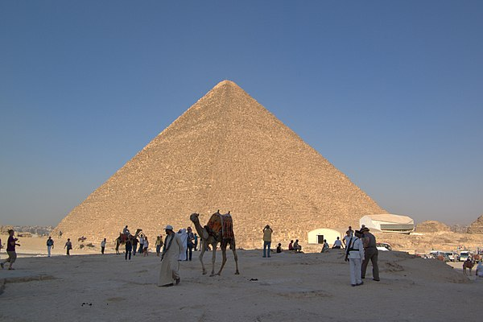

 Більшість єгиптологів вважають, що піраміда була побудована близько 2560 року до н. е. і є гробницею єгипетського фараона IV династії Хуфу (Хеопса). Проте не вдалося знайти жодного напису відносно дати створення цієї грандіозної споруди, тому існують й інші теорії щодо датування і призначення Великої піраміди. Радіовуглецевий метод вказує на період спорудження від 2840 до 2680 рр. до н. е.